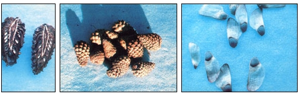
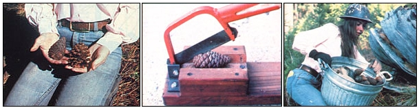

As autumn's days dawn crisp and clear, 'tis then the greatest time of year to gather pinecones in a stash . . . and turn them in for extra cash!
Gathering the distinctive seedpods of evergreen trees is an activity that can be enjoyable, environmentally positive, suitable for folks of all ages . . . and a danged good seasonal moneymaker!
Every fall, you see, the U.S. Forest Service, the U.S. Bureau of Land Management, various state forestry agencies, and many privately owned timber corporations eagerly purchase pinecones. The buyers are, of course, interested in the seeds sheltered within, which can be germinated in nurseries and (later) transplanted to the forest.
In 1979 I harvested cones near Missoula, Montana for Champion Timberlands, an industrial wood producer. At that time Champion paid $9 a bushel for ponderosa pine, $15 for Douglas fir, and $26 for western larch. And over a period of several weeks, I was able to earn an average gross income of $17 per hour. (Granted, I was already an experienced cone gatherer, and that certainly helped, but I know a few inexperienced pickers who did almost as well . . . although I must admit that 1979 did produce a bumper crop of cones in our area.)
HOW TO GET STARTED
Your first course of action, as a would-be "pinecone magnate", is to locate a market for your anticipated windfall. I recommend that you begin by contacting any nearby timber companies and forestry agencies to see whether they're in the market for cones this year. You might also check with the railroads in your region . . . they often have substantial timber holdings that are managed by professional foresters. In addition, be sure to get in touch with regional tree nurseries ... simply to find out which agencies provide their seed and might need you to go into the woods and collect it!
It's extremely important to talk with the foresters before you actually gather any pinecones. For one thing, they'll usually have specific areas in which they'd like you to do your collecting - primarily land they plan to reforest - as well as particular species of cones they need: fir, larch, pine, or what have you. Furthermore, many of these professionals will want to teach you some particular system of "tagging" . . . that is, recording the location and altitude at which the cones were gathered. (Such information becomes essential when matching young evergreen seedlings to an appropriate site.)
A forester can also show you how to identify each species and how to determine which cones contain viable seed (your buyers will want to purchase only seed they're able to use, of course). And although it's a good idea to meet with the local experts early in the season, you probably can't expect to rush right out afterward and get started. The crop won't be worth a thing until the seeds inside the pods mature . . . a process that will vary with site, species, and weather conditions, but should take place by midautumn.
TESTING THE TIMING
To discover whether the seeds are mature, simply pick a "green" cone (one that you're sure is part of this year's crop) and use a long knife to cut it in half lengthwise (a cross section won't do). You should see several small white seeds, each in its own little chamber, on the cut face. If they're still milky and soft, the cones in that area should be left alone for another week or two. What you're looking for is seeds as firm and distinct as those you shake from a packet when planting your garden.
In the course of cutting a few test cones, you'll also probably learn how to spot old ones, which you'll want to avoid . . . because last year's crop is worthless. The over-the-hill pods will be brown . . . you'll see great numbers of them on the ground . . . and when you cut one of the oldsters open, you'll find empty seed chambers. Foresters can detect old cones at a glance, and they won't pay you for them, so it's essential that you learn the difference.
By the way, keeping an eye on the squirrels is often worthwhile . . . they seem to know just the right time to collect each year's crop, without the benefit of a knife. In fact, I know one old-timer who doesn't begin gathering until he hears the tiny thuds of pinecones hitting his roof . . . indicating that squirrels are busily "clipping" them from the limbs above his house.
GATHERING BASICS
Before you head into the forest to begin work, you'll need to obtain a pair of light cotton gloves, a bucket (or a small cardboard box), and a few gunnysacks. Don't use plastic garbage bags, as the heat generated and trapped inside them will quickly destroy the viability of the collected seeds.
If you want to keep a close eye on your financial progress, you'll also need a bushel basket, since most buyers pay by the bushel. Make sure the container is regulation size, though, or you're likely to be disappointed at cash-in time. (You can obtain "legal" baskets at many agricultural co-ops or grain outlets.)
In order to pick cones effectively, you must either find trees short enough to be reached from the ground (many species do produce viable seed on young trees), or else come up with a method of getting to the branches of taller specimens. Some folks actually climb the trunk and sever heavily laden branches with a handsaw . . . but even though you can likely remove up to 10% of an evergreen's boughs without harming the tree, such activity should be limited to your own woodlot. Another commonly used trick is to harvest cones from roadside conifers by standing on top of a vehicle in order to reach them.
Needless to say (I hope!), it would be poor behavior indeed to fell a tree just to get at its cones. However, you might want to find out where logging operations are being conducted and glean the fallen branches in that area. (Always ask permission from the loggers first.) Such sites often provide excellent sources of cones . . . and are usually the very areas earmarked for replanting later. Evenings and weekends are the best times to work cutover land, though, because logging-in-progress can be dangerous to be around.
Timber- thinning operations can also provide good places to pick cones easily. Use your imagination, and you'll no doubt come up with other "hot spots" that are unique to your area.
ODDS AND ENDS
As you collect pinecones, try to remove all foreign material - dirt, rocks, twigs, and moss - from the pods. Buyers generally separate the seeds from the cones mechanically . . . and foreign objects can jam the machinery used. Therefore, many purchasers will reduce the pay scale for a "dirty" crop.
Often you'll discover that your hands and/or gloves will become coated with a sticky, honeylike pitch in the course of a day's collecting. The substance is easily removed with gasoline or alcohol . . . but don't use the flammable liquids in the woods, because cone-picking season usually coincides with the driest time of the year.
If you have to store your haul for a few days before cashing it in, hang the cones in gunnysacks where fresh air can circulate through the mesh. Don't pile bags of cones in a large heap, or those on the bottom will get so hot that their seeds will be destroyed (in fact, the cones could actually catch fire).
Finally, remember that proper care of your harvest, cleanliness, and correct tagging procedures will increase your income this season and assure you of similar profits next year. Foresters prefer to buy from pickers they know and trust, because by doing so they can cut down on their own inspection and cleanup chores.
Cone picking may be hard labor, but it can also be a lot of fun. In addition, the job offers flexible hours . . . one of the most pleasant work environments imaginable . . . and extra cash to help get you through those long winter months which are just around the corner.
EDITOR'S NOTE: You may want to hold back a few cones from the harvest and use the seed to start your own reforestation or backyard landscaping project. See page 66 for the necessary know-how.
|
 PHOTOS BY THE AUTHOR This ponderosa pine's white seeds are mature, so the cone is ripe for collecting and selling. . . A batch of newly picked cones from lodgepole pine. . . . An example of what the ponderosa pine's seed look like after the cone opens to release them. |
 PHOTOS BY THE AUTHOR (FROM LEFT) This season's pinecone is on the left, last year's worthless specimen is on the right. Foresters can detect old cones at a glance, so it's essential to know the difference. . . . A homemade con-cutter makes testing seeds for viability and maturity much easier. Look for seeds as firm and distinct as those from a purchased packet. . . . The author's wife collects cones in a metal pail. Note her use of a hard hat and gloves. |
|